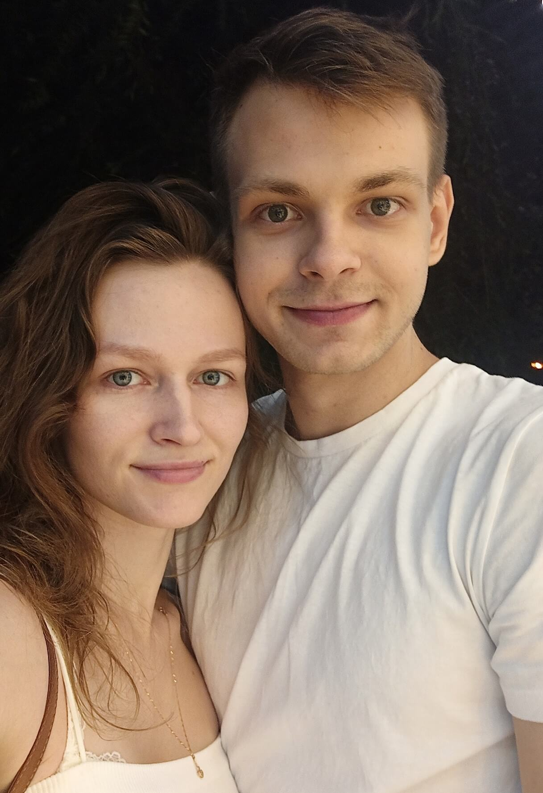
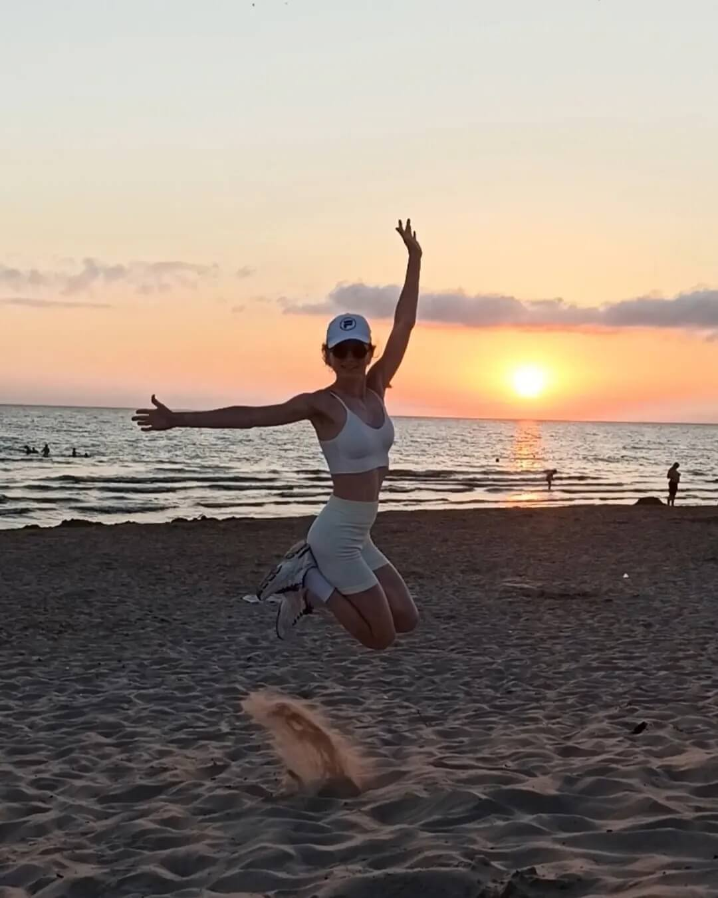
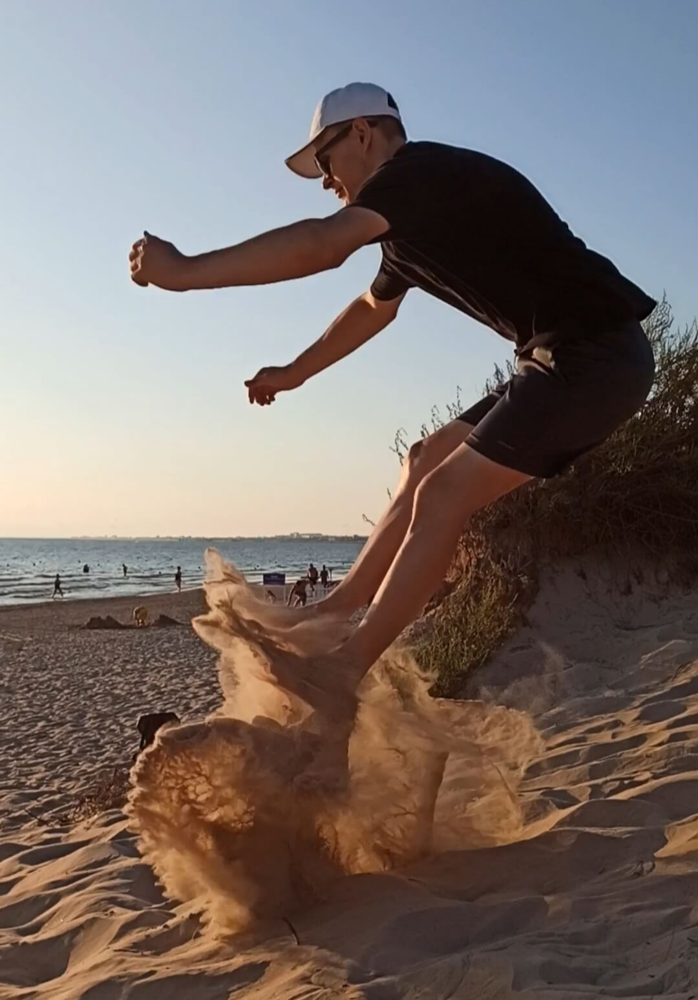
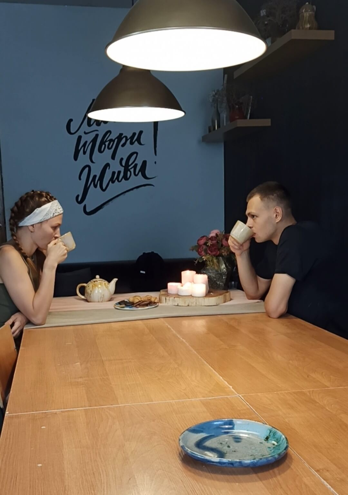
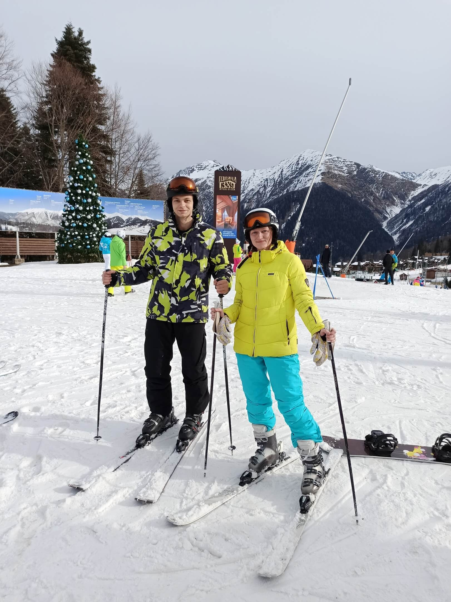
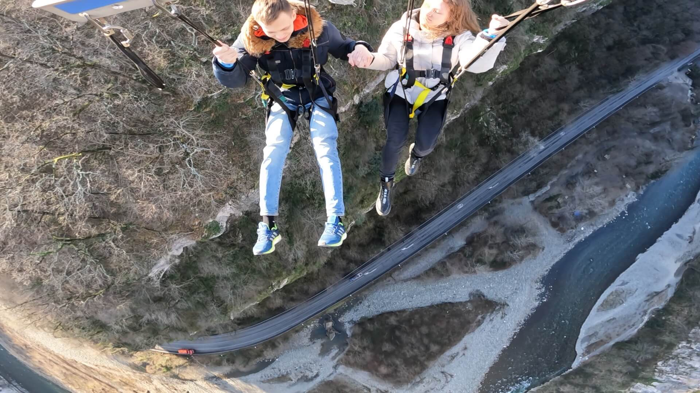

Привет! Мы - Вадим и Света. В наших сердцах царит любовь друг к другу, поэтому мы решили пожениться. Хотели бы с вами поделиться нашей историей.
Мы обладаем удивительной способностью - радоваться всему вокруг и наслаждаться жизнью.
 
Мы любим всю нашу семью, которая стала ещё больше. Мы благодарны нашим
родителям что нас вырастили в любви и заботе. В нашей жизни было много
светлых моментов, потому что Вы наши родители всегда были с нами,
поддерживали, любили, радовались и переживали вместе с нами. Спасибо вам
за все моменты!
Отдельно хочется выделить наших братьев, которые не только сопровождали
нас в этом путешествии под названием "жизнь", но и вдохновляли нас
каждый день своими примером. Саша и Лёша, мы вас очень любим!
Теперь перейдем к интересным историям.

Хотим поделиться историей нашего знакомства, мы думаем вам будет
интересно.
Мы оба учились в ЮФУ. Вадим проживал в общежитии с самого начала учёбы,
в то время как Света переехала туда лишь в последний год магистратуры.
Судьба распорядилась так, что наши комнаты оказались на одном этаже.
Однажды великолепным вечером Вадим находился в коридоре нашего отсека, а
Света проходила мимо, поздоровалась с Вадимом, не обращая внимания на
то, с кем здоровается. Света была дружелюбной и приветливой ко всем
соседям.
В тот момент Вадим подумал, что Света, возможно, пришла в гости к
кому-то. Встретив соседку Светы на этаже, Вадим начал расспрашивать:
"Кто эта девушка? И как я могу её найти?". Его соседка "раскрыла все
карты" и предоставила страничку Светы в ВКонтакте. Без раздумий, Вадим
отправил Свете SMS с фразой, подобной той, что звучит в известном фильме
о Человеке-пауке: "Привет, я дружелюбный сосед, давай общаться". После
этого мы стали неразлучными, и нам не хочется расставаться. Мы
счастливы, что все события сложились именно так в нашей жизни. Покинув
общежитие, мы забрали оттуда самое ценное — друг друга.
Мы оба приветствуем активный образ жизни и любим заниматься спортом. В свободное время вместе программируем и изучаем английский язык.
 